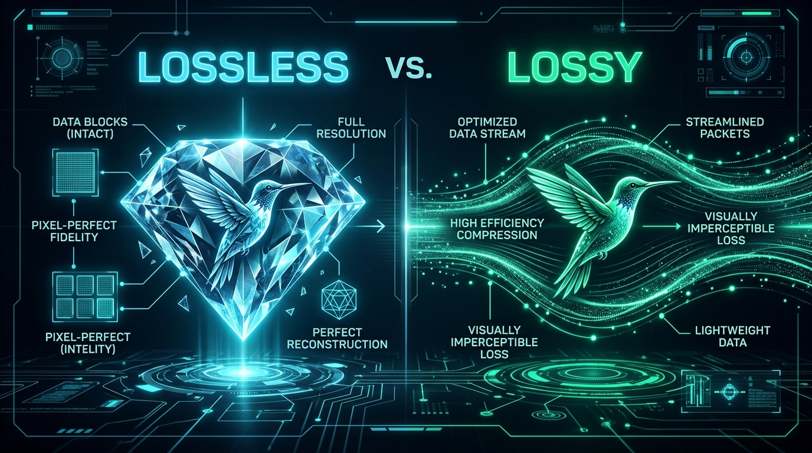

Lossless vs. Lossy Image Compression: Complete Developer & Designer Guide

Every digital creator, front-end engineer, and website owner inevitably confronts the classic digital trade-off: file size versus visual fidelity. An uncompressed photographic banner might look breathtaking on a 4K studio monitor, but if it takes 3.8 megabytes to download, mobile visitors will bounce before the hero section even finishes rendering. Meanwhile, over-compressing images creates blurry textures, visible pixelation, and degraded brand perception.
Navigating this balance requires a deep understanding of lossless and lossy compression algorithms. Both techniques serve essential roles in the modern web performance stack. In this guide, we demystify how these compression paradigms work under the hood, identify their mathematical differences, and reveal the exact "sweet spot" settings to save maximum bandwidth without compromising visual quality.
1. What is Lossless Compression?
Lossless compression reduces file size without discarding a single byte of image information. When the compressed image is decompressed by the browser engine, every pixel’s RGB and Alpha values are restored to their exact mathematical state prior to compression.
Lossless algorithms work by eliminating statistical redundancies in the raw data stream using techniques such as:
- Run-Length Encoding (RLE): Detecting repeating sequences of identical pixels (e.g., a solid white background) and replacing hundreds of repetitive values with a compact counter.
- LZ77 / Deflate Compression: Replacing recurring patterns across the entire file with references to a dictionary table.
- Huffman & Entropy Coding: Assigning shorter bit-codes to colors and luminance patterns that appear most frequently across the image canvas.
Typical lossless formats include PNG, GIF, and Lossless WebP. Lossless compression produces 0% generation loss, making it ideal for medical imaging, typography, user interface icons, and archival photographs. However, it can generally reduce file size by only 10% to 30% for complex photographic assets.
2. What is Lossy Compression?
Lossy compression reduces file size by permanently discarding image details that the human visual system is least likely to notice. This process is called psychovisual optimization.
The human retina is far more sensitive to variations in brightness (luminance) than variations in hue (chrominance). Lossy algorithms exploit this biological limitation through:
- Chroma Subsampling (4:2:0 or 4:2:2): Preserving full-resolution luminance information while halving or quartering color frequency data.
- Frequency Quantization: Filtering out subtle high-frequency gradients that can rarely be distinguished by the human eye at normal viewing distances.
- Predictive Block Coding: Approximating surrounding pixel groups based on adjacent vectors, storing only the difference.
Formats that leverage lossy compression include JPEG, Lossy WebP, and AVIF. Because data is discarded, lossy compression can achieve staggering file reductions of 60% to 90% compared to uncompressed raw images.
3. Side-by-Side Comparison Matrix
| Parameter | Lossless Compression | Lossy Compression |
|---|---|---|
| Data Retention | 100% exact mathematical restoration | Selectively discards imperceptible data |
| Typical File Reduction | 10% to 30% reduction | 60% to 90% reduction |
| Repeated Edits & Saves | Safe; zero degradation across generations | Risk of generation loss and artifact buildup |
| Primary File Formats | PNG, WebP (Lossless mode), GIF, SVG | WebP (Lossy mode), JPEG, AVIF |
| Alpha Transparency | Fully supported (8-bit alpha in PNG & WebP) | Supported in WebP & AVIF; NOT in JPEG |
| Impact on Core Web Vitals | Moderate; files may still trigger LCP delays | Huge boost to LCP (Largest Contentful Paint) |
4. The Quality Slider Sweet Spot: Why 75%–82% is King
When using an image optimizer like PicsConvert, you are presented with a target quality slider (from 1% to 100%). Many web creators mistakenly believe that setting the slider to 95% or 100% ensures "professional quality," but in reality:
Compression curves are non-linear. The file size difference between 100% quality and 80% quality is colossal (often a 70% decrease in kilobytes), whereas the perceptible visual difference to human viewers on high-DPI screens is essentially zero. Conversely, dropping from 70% down to 50% yields only tiny marginal file savings while introducing sharp, visible artifacts.
Our empirical testing across thousands of web images establishes the following production benchmarks:
- 80%–82% Quality (The Ideal Web Standard): Delivers 70%–80% file size reduction with flawless visual fidelity. Excellent for hero banners, portfolio photography, and e-commerce hero images.
- 72%–76% Quality (High-Speed Performance): Maximizes page speed for content-heavy news sites, blog post illustrations, and mobile feeds. Undetectable on mobile screens.
- 90%+ Quality (Storage Archival Only): Bloats payload significantly for negligible gains; should be reserved strictly for master archives or fine-art prints.
5. Strategic Decision Framework: When to Use Which?
Follow these architectural guidelines when deciding between lossless and lossy modes for your web assets:
- Logos, Icons, and Brand Badges → Lossless (or WebP with locked alpha). Sharp lines, corporate colors, and crisp typography suffer if quantization blurs boundaries.
- Hero Banners & E-Commerce Photos → Lossy WebP (Quality 80%). Photographic textures and complex color blends are the ultimate candidates for lossy algorithms, delivering huge performance jumps.
- UI Screenshots with Text → Lossless PNG or Lossless WebP. Small pixel fonts and UI elements blur noticeably under standard lossy JPEG algorithms.
- Vector Assets → SVG or High-Res WebP Rasterization. See our guide on converting SVG to WebP & PNG.
6. Instant Offline Batch Compression with PicsConvert
One major hurdle with traditional web converters is privacy and file caps. Cloud converters force you to upload proprietary client photos, financial documents, or copyright assets to remote data centers.
With PicsConvert, all compression and format conversion occurs inside your local browser sandbox via HTML5 Canvas and the FileReader API. You can drag and drop an entire folder of assets, toggle quality factors, inspect the before/after comparison slider in real time, and download the optimized bundle as a structured ZIP file—with 0 data ever leaving your device.